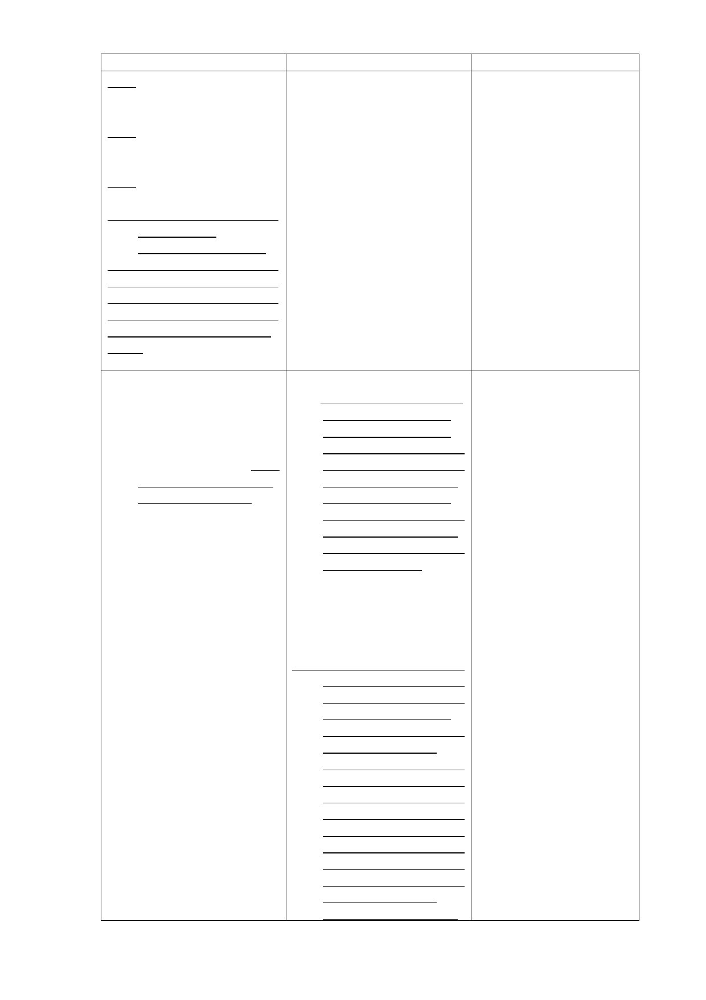

新計畫
(五)拓寬福德街84巷計畫道
路寬度11公尺至15公
尺，紓解未來車潮。
(六)藉由捷運出入口設置，
聯繫基地與南端親山
系統。
(七)廢除廣慈博愛院與福德
平宅間之計畫道路。
(八)參酌原開發強度規定進
行規劃開發
為提高公有土地利用
效能，並配合本市公營住宅
政策，滿足市民基本居住需
求，在不影響周邊交通服務
水準，及原機關用地容積率
400％上限下，進行規劃開
發。
陸、實施進度與經費
一、開發方式得採設定地上
權方式，交由民間廠商
開發興建與經營管理
（BOT），或由本府編
列預算經費開闢。並預
訂於103年起辦理規劃
設計及招標作業。
二、(刪除)
原計畫
說明
(四)拓寬福德街84巷計畫道 6.修正條次。
路寬度11公尺至15公
尺，紓解未來車潮。
(五)藉由捷運出入口設置，
聯繫基地與南端親山
系統。
(六)廢除廣慈博愛院與福德
平宅間之計畫道路。
(七)降低原有開發強度、總
量管制
本計畫區原屬機關用
地，建蔽率40%、容積率
400%，惟地區現況發展程度
密集，公共設施服務水準不
佳，宜降低整體開發強度，
故比照鄰近第三種住宅區容
積率進行本計畫區開發總量
管制。
陸、實施進度與經費
一、預定於民國95年起進行 本計畫因相關開發時 程
廣慈博愛院及福德平 及開發方式均已不同，爰
宅院民及現住戶安置 配合修正相關文字。
作業，並就優先騰空土
地進行簡易綠化，自民
國96至100年開始進行
本案基地社會福利設
施用地、商業區、公園
用地及道路用地 之開
發作業。本案應以整體
開發方式辦理，開發方
式得採設定地上權方
式，交由民間廠商開發
興建與經營管理
（BOT），或由本府編
列預算經費開闢。
二、本案BOT開發計畫係將社
會福利設施用地、公園
用地、道路用地及商業
區交由得標廠商整體
開發、營運及管理，預
計開發作為老人住
宅、養護中心、平價住
宅等社會福利設施，以
及地下停車場、附屬商
業設施等。預計96年辦
理招商，由得標廠商分
三期興建，其中第一期
興建公園（含地下停車
場）及附屬商業設施，
預計97年底開始施
工，100年完工營運，
- 10-